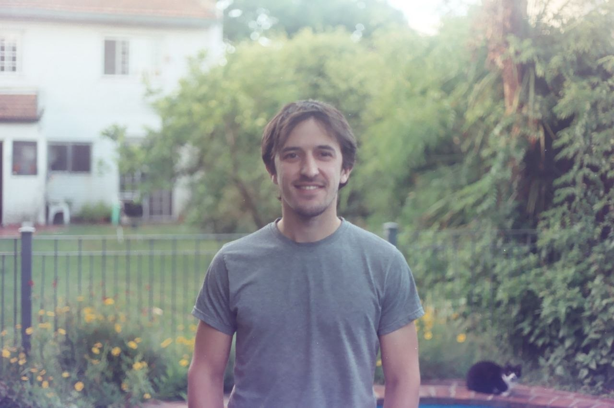

Member of the LOREL team. Second year PhD student under the supervision of Pablo Barenbaum at the ICC as part of the FCEyN in the University of Buenos Aires funded by CONICET.
I completed my licenciatura degree (equivalent to a bachelors degree plus a masters degree) in pure mathematics at DM-UBA .
Computational content of Classical Logic, Linear Logic, Realizability, Proof assistants, Intersection of Algebra and λ-Calculus.
Email: leolerena(at)gmail(dot)com
Location: Paris, France (Current until October 2026) / Buenos Aires, Argentina
Links:
GitHub |
DBLP